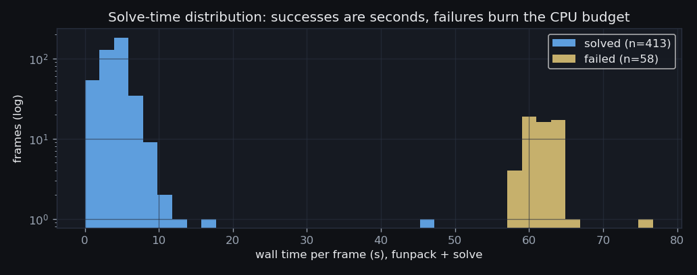

S1 — Astrometry Go/No-Go Experiment
449 / 517 sampled frames solved ·
11 strata (6 GO) ·
seed 20260817 ·
built 2026-08-21T02:45Z
(S1 v1.2 (2026-08-20) — measured-dispersion candidate gate,
commit bf9fe64)
· the front page
1 · Tooling
local astrometry.net + downloaded index filesQuestion
No local plate-solving stack existed on this machine (no
solve-field, no index files anywhere on the attached disks).
Can one be assembled that solves RLMT frames at all — and at what
per-frame cost?
Evidence
Installed 0.97
(astrometry.net, Homebrew) and downloaded
145 index files
(5.4 GB) into /Users/jameswetzel/astrometry-indices —
series 4107.fits,4108.fits,4109.fits,4110.fits,4111.fits,4112.fits,4113.fits,4114.fits,4115.fits,4116.fits,4117.fits,4118.fits,4119.fits,4203,4204,4205,4206,4207: the 4200 (2MASS) skymark
scales 3–7 (5.6′–30′ quads) that bracket the
∼37′ RLMT field, plus the small wide-field 4100 (Tycho-2) set.
Solves ran with --downsample 2,
a 55 s CPU limit
(75 s wall cap), and the header
pointing as a ±15.0° hint
where present. The measured plate scales, per camera family:
| READOUTM | bin | solved frames | measured scale ("/px) | prior handed to solver |
|---|---|---|---|---|
| Mode0 | 2 | 179 | 0.4505 – 0.4512 | 0.30 – 0.66 |
| 1MHz High Sensitivity 16-bit | 1 | 94 | 0.8084 – 0.8113 | 0.40 – 1.30 |
| Fast | 2 | 91 | 0.4495 – 0.4518 | 0.30 – 0.66 |
| High Gain | 1 | 74 | 0.5390 – 0.5401 | 0.40 – 0.75 |
| High Gain StackPro | 1 | 11 | 0.5390 – 0.5393 | 0.40 – 0.75 |
A solution-acceptance gate guards every
“solved” verdict: a solution counts only when its measured
pixel scale sits inside the prior handed to the solver, at least
8 index stars matched, and the astrometric
RMS stays under 5″. The gate caught
2 false positive(s) in the experiment (recorded as
bad_solve): astrometry.net emitted a confident-looking WCS
at 7× the true plate scale from a 4-star quad match on a healthy
Mode0 field. Any batch run inherits the same gate, so false solutions
are never written into the manifest.
Decision
Consequence
A successful solve costs seconds (median times per stratum below); the tooling is not the bottleneck — frame quality is.
2 · The candidate universe
what astrometry cannot even apply to, counted firstQuestion
The manifest counts 78,225 unsolved canonical raw Light frames. How many of them can a plate solver even be pointed at?
Evidence
| population class | frames | meaning |
|---|---|---|
unsolved_total | 78,225 | canonical rawimage Light frames with pltsolvd != 1 |
excluded_measured_spectrum | 16,639 | S2c MEASURED dispersion traces on this frame — it is a spectrum, whatever its FILTER string says |
excluded_calib_vocab_filter | 3 | FILTER = 'dark'/'bias'/'flat' header glitch (S0b) |
excluded_window_geometry | 0 | either axis < 512 px — too little sky for quad matching (see docs/pipeline/s0e_geometry_fix.html: the 8x3211 signature was a metadata artifact) |
solvable_candidates | 61,583 | frames the solver can be pointed at |
candidates_unstratified | 5,766 | solvable but in no stratum (small heterogeneous residue) |
The geometry exclusion is now
EMPTY — 0 frames. It used to be the largest
exclusion on this page, and it was an artifact: the 8×3211
“photometry windows” were a tile-compressed BINTABLE’s
row length read as an image width, not a shape any camera ever put on the
sky. The S0e repair repointed those rows at their real geometry (see
the geometry-repair page), and they
returned to the candidate universe. EU UMa is the case that matters
for the CV paper: all 207 of its unsolved Fast-readout
frames are full frames, 0 of them fail the geometry
gate, and they now sit in their own stratum
(cv_fast_fullframe, 207 frames) instead of in
no stratum at all. An earlier version of this page said that
population “can never be plate-solved by any tool”. That was
wrong, and the rates below are measured on the repaired universe.
The 16,639 spectrum rows are the only large exclusion left:
frames that stage S2c
measured to be slitless spectra — parallel traces along a
common grating axis, no star field by design. That criterion is
itself a correction: until S1 v1.2 this page decided “spectrum”
by matching the FILTER string against a list of grism names, which was
wrong in both directions. Section 3 shows the damage and the delta.
Decision
s1_populations — nothing is silently dropped,
and the window-strip populations are handed to the time-series pipeline
as a named fact, not a failure.Consequence
Success rates below are rates on frames a solver could in principle solve — the honest denominator for the batch decision.
3 · Label vs measurement: the gate correction
a published rate, taxonomy and verdict were computed over the wrong denominatorQuestion
Astrometry cannot apply to a slitless spectrum, so the
candidate universe must exclude spectra. Earlier versions of this page
decided which frames were spectra by reading the FILTER string and
matching it against five known grism names
(grism, hagrism, hrg, lrg, oggrism).
Stage S2c has since measured
dispersion per frame — parallel traces along a common grating axis. Do
the label and the measurement agree about what a spectrum is?
Evidence
They do not, in both directions. The telescope has
a MIXED filter slot: slot 6 carries a grating on some nights
and glass on others, and its FILTER string is simply 6 —
nothing in the header distinguishes the two cases. The label rule
therefore let those spectra into the astrometry universe, where
they could not possibly solve; and it deleted, unseen, frames whose
labels look like grisms but which S2c measures as ordinary images. The
full cross-tab over all 78,225 unsolved
frames:
| FILTER label | S2c measurement | label gate | measured gate | movement | frames |
|---|---|---|---|---|---|
plain_label | dispersed | included | excluded | OUT — was in the universe, is a spectrum | 1,211 |
grism_label | indeterminate | excluded | included | IN — was deleted unseen, is an image | 960 |
grism_label | direct | excluded | included | IN — was deleted unseen, is an image | 178 |
plain_label | unmeasured | included | included | unchanged (in) | 58,596 |
grism_label | dispersed | excluded | excluded | unchanged (out) | 15,428 |
plain_label | direct | included | included | unchanged (in) | 1,403 |
plain_label | indeterminate | included | included | unchanged (in) | 446 |
plain_label | unmeasured | excluded | excluded | unchanged (out) | 3 |
The retired label gate called 61,656 frames solvable candidates; the measured gate calls 61,583. The two universes differ by 1,211 frames out and 1,138 frames in — a near-cancelling net of -73, which is precisely why the error was invisible in the headline census and had to be found in the failure gallery instead.
The behavioural check. In the S1b production batch — a population far larger than this experiment’s samples — frames that the solver actually attempted solved at 98% of 1,040 attempts when measured direct, 77% of 35 attempts when indeterminate, and 27% of 11 attempts when dispersed (QC-skipped frames excluded: they never reached the solver). The indeterminate class behaves like images, not like spectra — which is the empirical half of the argument for keeping it.
Decision
is_solvable_candidate_by_label) purely to compute the table
above. The rule for each of the four dispersion classes, stated so that
none of them defaults silently:
dispersed→ EXCLUDED. Measured traces on a common grating axis. It is a spectrum.direct→ INCLUDED, whatever the FILTER says. 178 frames carrying a grism-looking label are measured direct images. A label loses to a measurement of the same fact; these return to the universe.indeterminate→ INCLUDED. S2c looked and could not certify either way. This moves 960 frames in (the indeterminate frames that carried a grism-looking label; the rest were already in). The reason is that the gate's question is ontological — is this an image? — never predictive — will it solve?. Excluding frames because they look unlikely to solve would inflate the very rate this experiment measures. S2c's commonest indeterminate reason is literally “no usable sources extracted”, which describes a blank IMAGE far more often than a spectrum — and the production batch corroborates it (below).unmeasured→ INCLUDED. S2c targeted the dispersion-suspect population, so 58,599 candidates were never measured at all. This rule moves zero frames — every unmeasured frame carries an ordinary label and was already in — but it still has to be stated, because the alternative (exclude anything not certified direct) would delete most of the backlog on no evidence whatever.
Consequence
What the contamination did. 12 of the 65 failures autopsied under the old gate are frames S2c measures as spectra. Every one of them was machine-diagnosed as an optical fault — the frames were real, the statistics were real, and the diagnosis was still wrong, because the autopsy was asking “what is wrong with this image?” about something that was never an image:
| stratum | old machine diagnosis | frames |
|---|---|---|
sn_gsense_broadband | defocused (giant blobs, no point sources) | 8 |
cv_gsense_misc | trailing (guiding/wind) | 2 |
cv_gsense_misc | starved (blank/clouds/hot-pixel-only) | 1 |
sn_gsense_broadband | trailing (guiding/wind) | 1 |
No wrong astrometry was ever produced: a spectrum simply fails to solve, and the batch QC gate skips it. What was produced was a rate over a denominator containing non-images, a failure taxonomy that attributed spectra to defocus and wind, and verdicts resting on both. The corrected per-stratum delta:
| stratum | old backlog | new backlog | Δ backlog | old solved | new solved | old rate | new rate | Δ rate | old verdict | new verdict | verdict |
|---|---|---|---|---|---|---|---|---|---|---|---|
cv_mode0_sloan_short | 2,341 | 2,341 | — | 48 / 48 | 48 / 48 | 100.0% | 100.0% | +0.0 pp | GO | GO | same |
cv_mode0_sloan_long | 1,663 | 1,663 | — | 48 / 48 | 48 / 48 | 100.0% | 100.0% | +0.0 pp | GO | GO | same |
cv_ikon_sloan | 558 | 558 | — | 48 / 48 | 48 / 48 | 100.0% | 100.0% | +0.0 pp | GO | GO | same |
cv_gsense_misc | 40 | 37 | -3 | 25 / 40 | 25 / 37 | 62.5% | 67.6% | +5.1 pp | CAUTION | CAUTION | same |
cv_fast_fullframe | 207 | 207 | — | 45 / 48 | 45 / 48 | 93.8% | 93.8% | +0.0 pp | GO | GO | same |
sn_gsense_broadband | 369 | 308 | -61 | 15 / 48 | 18 / 48 | 31.2% | 37.5% | +6.2 pp | NO-GO | NO-GO | same |
dwarf_gsense_deep | 247 | 247 | — | 42 / 48 | 42 / 48 | 87.5% | 87.5% | +0.0 pp | CAUTION | CAUTION | same |
mode0_backlog_short | 9,232 | 9,720 | +488 | 48 / 48 | 41 / 48 | 100.0% | 85.4% | -14.6 pp | GO | CAUTION | MOVED |
mode0_backlog_long | 8,478 | 8,892 | +414 | 46 / 48 | 42 / 48 | 95.8% | 87.5% | -8.3 pp | GO | CAUTION | MOVED |
fast_fullframe | 19,020 | 19,134 | +114 | 45 / 48 | 46 / 48 | 93.8% | 95.8% | +2.1 pp | GO | GO | same |
ikon_backlog | 12,605 | 12,710 | +105 | 45 / 48 | 46 / 48 | 93.8% | 95.8% | +2.1 pp | GO | GO | same |
Verdicts that MOVE:
mode0_backlog_short: GO → CAUTIONmode0_backlog_long: GO → CAUTION
Frames whose sample membership survived the re-design keep
their recorded solve outcome rather than being re-solved
(285 of 517
sampled frames). A solve outcome is a property of the frame and the
solver configuration, and neither changed here; re-solving would spend
CPU to reproduce a known answer and let solver nondeterminism leak
into a delta that exists to isolate the gate change. The baseline it is
compared against is frozen in
s1_baseline_* (S1 v1.1 — FILTER-label grism gate (the published, contaminated universe)).
4 · The experiment
517 frames, 11 strata, seed 20260817Question
Per stratum — camera family × exposure band × project — what fraction of sampled frames does the local solver actually solve, how fast, and how well?
Evidence

{kind=link}

| stratum | definition | backlog | solved | rate [95% CI] | median t (s) | median RMS (") | median stars | verdict |
|---|---|---|---|---|---|---|---|---|
cv_mode0_sloan_short | ST LMi / VV Pup / EU UMa / AN UMa — Mode0 (ASI/IMX455) bin2, Sloan g/r/i, exptime < 150 s | 2,341 | 48 / 48 | 100% [93–100] | 4.6 | 0.92 | 196.50 | GO |
cv_mode0_sloan_long | same targets/camera, Sloan g/r/i, exptime ≥ 150 s | 1,663 | 48 / 48 | 100% [93–100] | 5.4 | 0.79 | 232.50 | GO |
cv_ikon_sloan | VV Pup on the Andor iKon (1MHz 16-bit, 2048²), Sloan + blank filter | 558 | 48 / 48 | 100% [93–100] | 2.2 | 0.49 | 236 | GO |
cv_gsense_misc | CV polars on the GSENSE4040 (High Gain family) — small legacy set, mostly ST LMi | 37 | 25 / 37 | 68% (census) | 4.6 | 0.80 | 20 | CAUTION |
cv_fast_fullframe | CV polars on the fast-readout camera, bin2 full frames — the EU UMa season, invisible until the 8x3211 metadata artifact was repaired (see docs/pipeline/s0e_geometry_fix.html) | 207 | 45 / 48 | 94% [83–98] | 3.4 | 1.07 | 36 | GO |
sn_gsense_broadband | SN 2023ixf on the GSENSE4040 (High Gain / StackPro bin1), all filters | 308 | 18 / 48 | 38% [25–52] | 4.3 | 2.48 | 36 | NO-GO |
dwarf_gsense_deep | Dw survey fields + NGC 5548 + NGC 5238 on the GSENSE4040, deep broadband/narrowband | 247 | 42 / 48 | 88% [75–94] | 7.0 | 1.67 | 22 | CAUTION |
mode0_backlog_short | Mode0 bin2 non-CV imaging, exptime < 10 s (rho Oph campaign and friends) | 9,720 | 41 / 48 | 85% [73–93] | 2.9 | 1.11 | 111 | CAUTION |
mode0_backlog_long | Mode0 bin2 non-CV imaging, exptime ≥ 10 s | 8,892 | 42 / 48 | 88% [75–94] | 3.2 | 0.73 | 237 | CAUTION |
fast_fullframe | Fast-readout FULL frames (naxis ≥ 512; the 8-px photometry strips are excluded by geometry) | 19,134 | 46 / 48 | 96% [86–99] | 2.7 | 0.68 | 29 | GO |
ikon_backlog | Andor iKon imaging beyond VV Pup | 12,710 | 46 / 48 | 96% [86–99] | 1.6 | 0.81 | 202 | GO |
cv_gsense_misc is a census: all 37 population frames were attempted, so its rate is the exact population rate — no confidence interval applies, and the verdict judges 67.6% directly against the thresholds. Its “batch decision” is moot: the 25 solutions already exist.
How independent are these trials? Frames within a night share cloud, focus and wind state, and the failure autopsy below attributes most failures to exactly those nightly conditions — so the Wilson intervals’ frame-level independence assumption is optimistic, and the effective sample size sits somewhere between the night count and the frame count. The stress test: collapse each stratum to all-or-nothing NIGHTS (a night succeeds only if every sampled frame on it solved) and re-read the interval.
| stratum | nights sampled / in backlog | perfect nights (all frames solved) | night-level Wilson lower bound |
|---|---|---|---|
cv_mode0_sloan_short | 14 / 15 | 14 / 14 | 78% |
cv_mode0_sloan_long | 18 / 35 | 18 / 18 | 82% |
cv_ikon_sloan | 7 / 8 | 7 / 7 | 65% |
cv_gsense_misc | 9 / 9 | 6 / 9 | exact |
cv_fast_fullframe | 8 / 8 | 7 / 8 | 53% |
sn_gsense_broadband | 25 / 33 | 9 / 25 | 20% |
dwarf_gsense_deep | 18 / 30 | 15 / 18 | 61% |
mode0_backlog_short | 25 / 116 | 20 / 25 | 61% |
mode0_backlog_long | 35 / 189 | 30 / 35 | 71% |
fast_fullframe | 24 / 66 | 22 / 24 | 74% |
ikon_backlog | 35 / 74 | 33 / 35 | 81% |
Decision
Consequence
3 of the 11 strata solved every sampled frame — including the Mode0 and iKon strata that carry the bulk of the CV Sloan backlog. The failure analysis below shows where the other strata lose frames: to the frames, not to the solver.
5 · Failure autopsy
read the pixels before blaming the solverQuestion
68 sampled frames failed to solve (the gate-rejected false positive included). Is the solver missing solvable fields — or were these frames never solvable?
Evidence

| diagnosis | old count (label gate) | new count (measured gate) | Δ | of the OLD count, measured spectra | strata affected |
|---|---|---|---|---|---|
| starved (blank/clouds/hot-pixel-only) | 24 | 33 | +9 | 1 | dwarf_gsense_deep,sn_gsense_broadband,cv_gsense_misc,ikon_backlog,mode0_backlog_long,mode0_backlog_short,fast_fullframe |
| trailing (guiding/wind) | 19 | 22 | +3 | 3 | sn_gsense_broadband |
| defocused (giant blobs, no point sources) | 17 | 9 | -8 | 8 | sn_gsense_broadband,cv_gsense_misc,ikon_backlog,mode0_backlog_long,cv_fast_fullframe |
| unexplained (stars present, solver still failed) | 5 | 4 | -1 | 0 | cv_gsense_misc,mode0_backlog_long,fast_fullframe |
Diagnosis is computed, not eyeballed: 10σ source extraction (min 5 px) splits detections into PSF-shaped sources (1.2–8 px semi-major axis) versus the hot-pixel spikes these RAW, dark-unsubtracted CMOS frames carry by the thousand. ‘Defocused’ = the brightest detections are >6 px blobs; ‘starved’ = fewer than 15 real sources or brightest detections smaller than 0.9 px (single-pixel spikes — hot-pixel pairs can fake both the source count and the elongation of a blank frame, so the trailing verdict additionally requires star-sized brightest detections); ‘trailing’ = median elongation > 1.8. Only 4 autopsied failure(s) show a healthy star field the solver still missed.
Audit, computed from the table above, not asserted: 0 of the 68 autopsied failures are frames S2c measures as spectra. Under the retired label gate the count was 12 — spectra sitting inside a taxonomy of optical faults, each one wearing a diagnosis (‘defocused’, ‘trailing’, ‘starved’) that presumed it was an image. Every row of this taxonomy now describes a frame that really was pointed at a star field.
Decision
One line of the old version of this paragraph is retracted. It
named “the filter-‘6’ series on the GSENSE” as
the archetype of a badly defocused sequence. Slot 6 is the
telescope’s MIXED slot, and S2c has since measured most of those
frames to be spectra: the “giant blobs, no point
sources” the autopsy saw were dispersion traces, not defocused
stars. A source-extraction statistic cannot tell those apart — it was
never asked to. The measured-dispersion gate now keeps spectra out of
the universe entirely, so the diagnosis is never put in that position
again. See section 3 for the full accounting.
Consequence
Batch success rates will track the experiment’s rates, and the batch runner inherits a cheap pre-filter: the autopsy statistics double as a QC gate that skips starless frames before the solver burns its budget on them. The taxonomy is also now diagnostic in a way it was not before: with spectra excluded upstream, a ‘defocused’ verdict means the optics, and can be taken to the observatory as such.
6 · Verdict & batch cost
the Week-2 review's decision tableQuestion
Per population: is batch re-solving viable, how many new WCS solutions should it yield, and what does it cost in wall-clock?
Evidence
| population | backlog frames | sample solved | pooled sample rate [95% CI] | backlog-weighted rate | expected new WCS (range) | projected hours | verdict |
|---|---|---|---|---|---|---|---|
| CV polars (Sloan) | 4,806 | 214 / 229 | 93% [89–96] | 99.5% | 4,421–4,790 | 0.6 | GO |
| SN 2023ixf | 308 | 18 / 48 | 38% [25–52] | 37.5% | 78–159 | 0.5 | NO-GO |
| Dwarf/AGN | 247 | 42 / 48 | 88% [75–94] | 87.5% | 186–233 | 0.1 | CAUTION |
| Facility backlog | 50,456 | 175 / 192 | 91% [86–94] | 92.4% | 41,169–48,864 | 3.6 | GO |
Hours are population-weighted: each stratum’s FULL backlog × its own median per-frame wall time ÷ 10 parallel workers — the same worker count the experiment ran at, on this machine. Failures are what cost time, and the projection charges every stratum its own failure-heavy median. The two rate columns answer different questions: the pooled sample rate pools the strata’s equal-size samples, which over-represents small strata relative to their backlog share (conservatively, for these data — the small strata are the weak ones); the backlog-weighted rate is what the expected-WCS column implies, weighting each stratum’s own rate by its backlog. The expected-WCS range multiplies each stratum’s backlog by its own interval bounds (a census stratum contributes its exactly-known count).
Decision
Consequence
On acceptance, the batch writes its solutions into a NEW manifest table (headers in the archive are never rewritten), zero-point photometry for the CV paper unblocks behind it, and the October frames inherit a verified solving stack with measured per-camera scale priors.